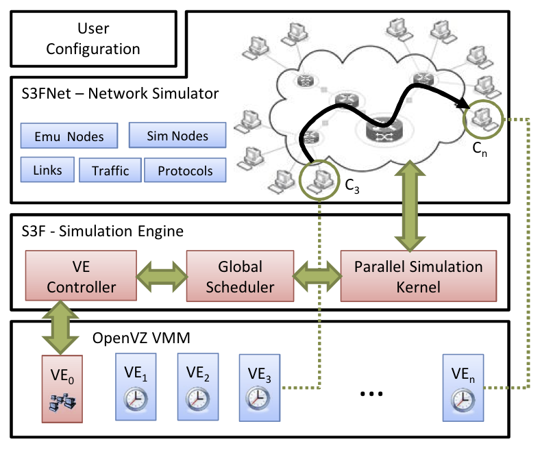

|
SSF (Scalable
Simulation Framework) defines an API
that supports modular construction
of simulation models, with automated
exploitation of parallelism.
Building on ten years of experience,
we have developed a second
generation API, named S3F, to better
reflect use
and support maintainability.
S3FNet is a
network simulator built on top of
the S3F kernel. It is capable of
creating communication network
models with network devices (e.g.,
host, switch, and router) and
layered protocols (e.g., TCP/IP,
OpenFlow). We also expand its
capacity by integrating the network
simulator with the OpenVZ-based
network emulation. Users
can use emulation to represent the
execution of critical software,
and simulation to model an
extensive ensemble of background
computation and communication.

The
main features of S3FNet are
summarized as follows:
Selected Publication
|